Kurtuluş Savaşı’nda en çok şehit veren şehirlerden biridir Kastamonu… Bu yönüyle ülkemiz için oldukça önemli bir yere sahiptir. Kastamonu tarihi yerler listemiz şehrin tarihi noktaları hakkında bilgileri derledik…
Kastamonu tarihi hakkında; Anadolu’daki birçok şehir gibi Kastamonu da tarihteki önemli medeniyetlere ev sahipliği yapmış bir şehir. Kastamonu’nun adıyla ilgili iki rivayet var; Bizans döneminde Kommenlerin kalesi anlamındaki “Kastra Kommeni” ifadesinden türediğini iddia edenlerin yanı sıra, Bizanslı Moni’ye aşık olan Türk komutanın “Kastım Moni” diyerek şehri kuşattığını ve bu nedenle şehrin adının Kastamonu olduğunu düşünenler de mevcut. Adının nereden geldiği bir kenara dursun, biz Kastamonu’nun somut tarihini keşfe çıkalım.
Kastamonu’nun tarihi ilk olarak MÖ 4. yüzyılda Perslerin yerleşim olarak kullanmasıyla başlamıştır. Perslerden sonra bölgede Büyük İskender ve Pontus Krallıkları hakimiyet kurmuş, sonrasında ise MÖ 1. yüzyıl dolaylarında bölgede Roma hakimiyeti başlamıştır.
Bölgede Türklerin varlığının ise Danişmentliler ile başladığı düşünülmektedir. Şehir, 1105 senesinde Danişmentliler tarafından ele geçirilmiştir. Danişmentlilerin bölgedeki hakimiyeti 100 sürmüş ve ardından Anadolu Selçukluları bölgede varlığını hissettirmiştir. 15. yüzyılda ise artık bölgenin hakimi Osmanlılar olmuştur.
Osmanlı döneminde özellikle yetiştirdiği birçok bilim insanı ile dikkat çeken Kastamonu’da Osmanlılardan kalma pek çok ilim yuvası medreseler yer almaktadır. Kurtuluş döneminde ise Kastamonu, güvenli bölge olması nedeniyle lojistik destek amacıyla çok fazla değerlendirilmiştir.
Kastamonu’nun en ünlüleri; Kastamonu Kalesi, Kastamonu’nun en ünlü tarihi yerleri arasında ilk akla gelen yerlerden olmaktadır. Saat Kulesi ve Taşköprü de görülmesi gereken önemli noktalar arasında bulunmaktadır.
Kastamonu gezi tavsiyesi; Kastamonu, tarihi yerleri ile olduğu kadar doğal güzellikleri ile de dikkat çekmektedir. Bu nedenle gezi planınızı biraz uzatarak şehrin muhteşem doğa hazinesini de keşfetmenizi öneriyoruz. Valla Kanyonu ve Horna Kanyonu’nda yürüyüş yapmak Kastamonu’da yapılabilecek önemli etkinlikler arasında bulunmaktadır. Yalnız Valla Kanyonu için profesyonel rehbere ihtiyaç duyacaksınız. Küre Dağları Milli Parkı ve Ilıca Şelalesi ise görebileceğiniz en güzel doğa harikaları arasında sayılabilir ve Ilıca Şelalesi yüzmek için de oldukça güzel bir nokta.
Müzekart; Kastamonu’nun tarihi yerleri içinde Müzekart kullanmanızı gerektirecek herhangi bir yer bulunmadığı için herhangi bir turistik karta ihtiyaç duyulmuyor.
İçindekiler
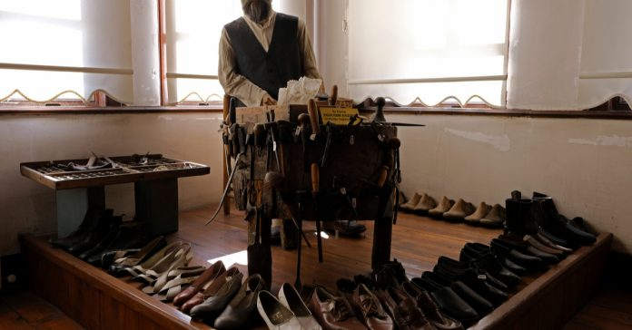
Burası neresi? Osmanlı mimarisinin en güzel örneklerinden biri olan Liva Paşa Konağı, şu anda Etnografya Müzesi olarak ziyaretçilerine Kastamonu yöresine ait bir çok önemli bilgiyi edinme fırsatı sunuyor. Bina, 1997 senesinde müze olarak hizmet vermeye başlamıştır. 3 katlı binanın birinci katı idari ofis olarak kullanılırken, müzenin ikinci katında Kastamonu’ya özgü el sanatları, en üst katında ise Osmanlı kültürünü yansıtan bir gelin odası, mutfak ve misafir odası gibi odalar yer almaktadır. Konakta toplamda 22 oda ve 6 salon bulunmaktadır.
Neden gitmeliyim? Kastamanonu’daki günlük yaşama dair geçmişin izlerini görmek ve şehrin yaşam kültürünü daha yakından tanımak için bu ücretsiz müzeyi mutlaka görmenizi öneriyoruz. Konak, şehir merkezinde olması sayesinde ulaşım konusunda sıkıntı yaşamadan ziyaret edilebilmektedir.
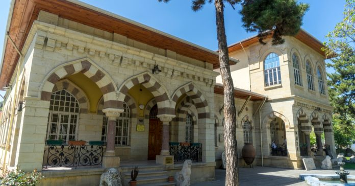
Burası neresi? Kastamonu Arkeoloji Müzesi’nin yer aldığı tarihi bina 1915 yılında Mimar Kemalettin Bey tarafından İttihat ve Terakki Cemiyeti’nin binası olarak inşa edilmiştir. 1952 yılında müzeye çevrilen ve bölgedeki arkeolojik kazılarda elde edilen eserlerin sergilendiği binada, Atatürk’ün Kastamonu ziyaretleri sırasında kullandığı eşyalar ve çekildiği fotoğraflar da sergilenmektedir. Özellikle Atatürk’ün çalışma masası ziyaretçiler tarafından ilgiyle incelenmektedir. 1997 yılında müze binası restore edilmiş, 2002 yılı itibariyle de vitrin aydınlatması, kalorifer sistemi ve çevre düzenlemesi gibi pek çok düzenleme yapılmıştır.
Neden gitmeliyim? Taş eserler konusunda geçmişe ışık tutan birçok eserin bulunduğu müze, Kastamonu ziyareti sırasında unutulmaması gereken ziyaret noktalarından biri. Müzede ziyaretçiler Hitit, Frig, Helenistik, Roma, Bizans ve Osmanlı dönemlerine ait pek çok önemli eseri inceleyebilmektedir.

Burası neresi? 2000 yılında açılan Mimar Vedat Tek Kültür ve Sanat Merkezi’ne, 2007 yılında eklemeler yapılmış. 75. Yıl Cumhuriyet Müzesi, Dantel Seksiyonu ve Kitre Bebek Seksiyonu, merkezin yeni gözdeleri haline gelmiş. Bu üçlünün arasında en dikkat çeken ise 75. Yıl Cumhuriyet Müzesi.
Neden gitmeliyim? Müzede, arkeoloji müzesinden sergilenmek için geçici olarak alınan silahların konulduğu bir silah seksiyonu ve şapka seksiyonu var. Şapka konusuna ayrı bir parantez açmamız gerekiyor; zira Mustafa Kemal Atatürk’ün Şapka Devrimi’ni Kastamonu’da yapmış olması, şehir tarihinde önemli bir dönüm noktası olarak değerlendiriliyor.
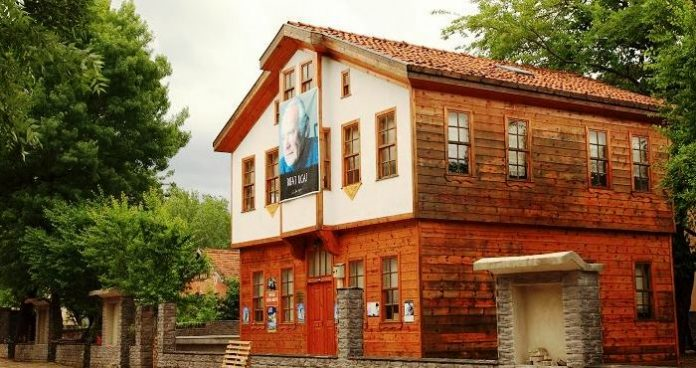
Burası neresi? Türk sinema tarihinin en komik filmlerinden biri kabul edilen Hababam Sınıfı’nın yaratıcısı Rıfat Ilgaz’ın anısını yaşatmak için açılan müze, Kastamonu’nun Cide ilçesinde bulunuyor. Bir Cide aşığı olan Ilgaz’ın 1911 senesinde doğduğu 2 katlı ev, vefatının ardından restore edilmiş ve müze olarak hizmet vermeye başlamış. Müzede ustanın eserlerinin yanı sıra; kişisel eşyaları ve fotoğrafları da sergileniyor.
Neden gitmeliyim? Yüzümüzde samimi bir tebessüm bırakan o güzel filmlerin yaratıcısı hakkında bilgi sahip olmak istiyorsanız, Rıfat Ilgaz Müzesi’ni mutlaka ziyaret etmelisiniz. Ayrıca her yaz temmuz ayında gerçekleştirilen Cide Rıfat Ilgaz Sarıyazma Kültür ve Sanat Festivali de Rıfat Ilgaz’ın Evi merkez alınarak düzenlenmektedir.
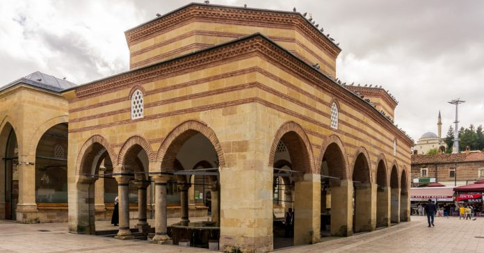
Burası neresi? Osmanlılar Döneminde Kastamonu’da inşa edilmiş ilk camii olarak adını tarihin altın sayfalarına yazdıran Nasrullah Camii, 1506 yılında inşa edilmiş tarihi bir yapı. Günümüzde hala ibadete açık olan caminin inşasında kesme ve moloz taş kullanılmış. Caminin yanı sıra meydan, şadırvan, köprü ve medrese ile aslında burası bir külliye olarak planlanmıştır.
9 kubbeye sahip yapının minaresi ise camiden ayrı olarak inşa edilmiş. Cami, 1746 senesindeki genişletme çalışmasının öncesinde 6 kubbeli bir yapıya sahipti. Şadırvan ise 1742 senesinde Bedii ismindeki bir hayırseverin katkıları ile inşa edilmiştir. Halk arasında bu şadırvandan su içenin ya yedi kere Kastamonu’ya geleceği ya da Kastamonu’ya temelli yerleşeceği rivayet edilmektedir. Nasrullah Camii’nin ününe ün katan bir hikayesi ise Mehmet Akif Ersoy’un İstiklal Marşı’nı ilk okuduğu yer olması…
Neden gitmeliyim? Şehrin Osmanlılar zamanında yapılmış ilk camisi olması burasını Kastamonu’nun camileri içinde çok önemli bir yere konumlandırmaktadır. İstiklal Marşı’nın ilk okunma yeri olması ise Kurtuluş dönemi için ayrı bir öneme sahip olmasını sağlamıştır.
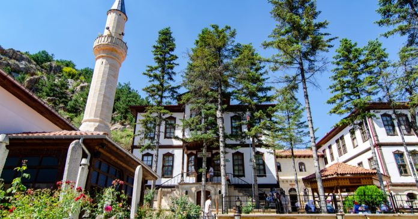
Burası neresi? III. Murad’ın Hocası Suca Efendi tarafından yaptırılan Şeyh Şabanı Veli Külliyesi; dergâh evi, Camii, türbe, kütüphane, Asa Suyu ve şadırvandan oluşmaktadır. Asa Suyu’nun tadının ve kokusunun Zemzem suyu ile benzerlik gösterdiği belirtilmektedir. Kütüphanenin üst katı şu anda dernek odası olarak kullanılmaktadır.
1490 yılında yaptırıldığı düşünülen külliye, vakıflar idaresine tescilli bir tarihi yapıdır. Külliyenin kuzey yönünde yer alan iki konak sonradan restore edilmiş ve müze olarak hizmet vermeye başlamıştır. Doğu yönünde yer diğer konak ise sergi salonu olarak hizmet vermektedir.

Burası neresi? Halk arasında Eligüzel Camii olarak da bilinen İbn-i Neccar Camii, 1335 yılında Candaroğlu Adil Bey tarafından yaptırılan Kastamonu’nun en eski yapılarından biridir. Camiyi görür görmez dikkatinizi çekecek ilk şey ahşap kapı kanatları. Ağaç oyma sanatıyla süslenmiş kapılar, caminin ihtişamlı görüntüsünü etkileyici kılmaktadır. Caminin tamamında kesme taş kullanılmıştır.
Candaroğlu Adil Bey tarafından yaptırılan caminin banisi İbn-i Neccar’ın kim olduğu ile ilgili çok detaylı bilgilere ulaşılamamaktadır. Diğer yandan 1943 yılında deprem sonucu son cemaat yeri ve minaresi yıkılan İbn-i Neccar Camii, 1968 yılındaki restorasyon çalışmalarından sonra günümüzdeki halini almıştır.
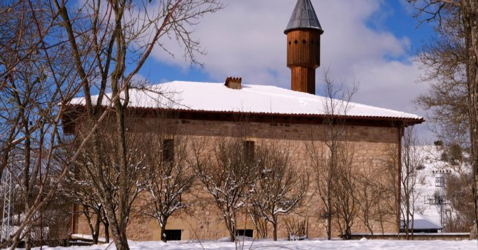
Burası neresi? İhtişamlı kapısıyla tarih severlerin ilgi odağı olan Mahmut Bey Camii, kent merkezine 18 kilometre mesafede Daday ilçesine bağlı Kasaba Köyü’nde yer almaktadır. 1366 yılında Candaroğulları Hükümdarı Emir Mahmut Bey tarafından yaptırılan caminin iç mimarisi tamamen ahşap olmakla birlikte yalnızca mihrap kısmında alçı kullanılmıştır. Caminin çatısında ise herhangi bir metal çivi kullanılmamış ve bindirme sistemi ile yapılmıştır.
Dış duvarları moloz taşlardan inşa edilen caminin, dikkat çeken kapısının orijinal hali Kastamonu Etnografya Müzesi Liva Paşa Konağı’nda sergilenmektedir. Camii özelliğini kaybetmeyen mimarisiyle 2014 tarihinden bu yana UNESCO Dünya Mirası Geçici Listesi’nde yer almaktadır. Cami, şehir merkezine 18 km mesafede yer almaktadır.
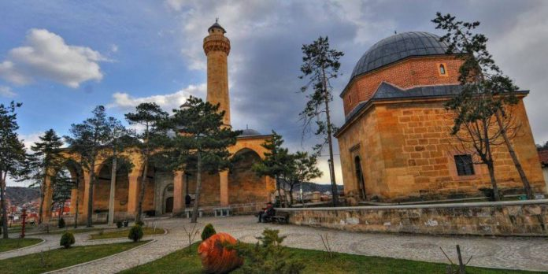
Burası neresi? Kastamonu merkezinde İsmail Bey Mahallesi’nde yer alan külliye, Candaroğullarınıın son hükümdarı İsmail Bey tarafından 15. yüzyılın ortalarında yaptırılmıştır. İsmailbey Külliyesi içerisinde; bir camii, türbe, medrese, han, hamam ve kütüphane gibi yapılar da bulunmaktadır.
Beylikler döneminin en etkileyici sanatını göreceğiniz bu yapılar içerisindeki deve hanı ve medrese, Kastamonu Valiliği tarafından restore edilerek, kentin yöresel mutfak ve el zanaatları merkezi olarak kullanılmaktadır.
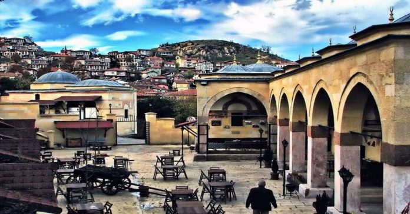
Burası neresi? Osmanlı’nın muhteşem mimarisini gözler önüne seren tarihi yapılardan bir diğeri de Yakup Ağa Külliyesi… Kanuni Sultan Süleyman’ın hazine reisi Yakup Ağa tarafından 1547 senesinde son halini alan medrese; imaret, misafirhane ve sıbyan mektebi olarak üç bölümden oluşmaktadır. Medrese içerisinde yer alan cami ise Yavuz Sultan Selim Han’ın kıymetli hocası Halimi Çelebi tarafından daha eski bir tarihte yaptırılmış…
Neden gitmeliyim? Külliye, Kastamonu içindeki önemli tarihi yerler arasında bulunmaktadır. Aynı zamanda külliye içinde bir de çay bahçesi hizmet vermektedir. Dilerseniz bu çay bahçesinde çayınızı içerek kitabınızı keyifle okuyabilirsiniz.
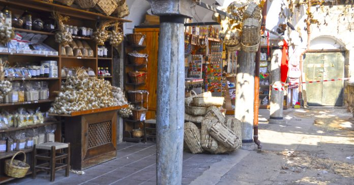
Burası neresi? 1746 senesinde inşa edilen Münire Medresesi, Nasrullah Camii’nin hemen arka tarafında yer alan tarihi bir yapı. Reisül Küttab Hacı Mustafa Efendi tarafından yaptırıldığı bilinen medrese, 2001 yılında Kastamonu Valiliği tarafından turizme açılmış ve çeşitli alışveriş dükkanlarıyla doldurulmuştur.
Neden gitmeliyim? Günümüzde 21 dükkanın faaliyet gösterdiği Münire Medresesi’nde, Kastamonu’ya özgü geleneksel el sanatı çalışmalarını, şifalı bitkileri ve Kastamonu’nun yöresel yemeklerinden bazılarını tatma şansı bulabilirsiniz.
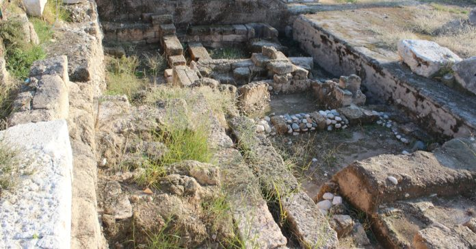
Burası neresi? Taşköprü ilçesinde gerçekleştirilen kazı çalışmalarıyla her geçen gün daha da gün yüzüne çıkan antik kent, bölgedeki geçmişe ışık tutacak eserlerin ortaya çıkmasını sağlıyor. İlk olarak MÖ 63’e gidelim. Genelde ülkemizin batısında ve güneyinde görmeye alıştığımız Roma dönemi antik kentlerinden biri Kastamonu’da yer alıyor. Şehir, Paflagonya Eyalet Merkezi olarak kurulan, Kastamonu’daki antik yerleşime dair en önemli noktalardan biridir. Antik bölge, Kastamonu’ya 45 km mesafede, şehrin kuzeyinde bulunmaktadır.
Bir Roma generali Pompeius Magnus tarafından kurulan Pompeiopolis Antik Kenti, uzun yıllar taş ocağı olarak kullanılmasından dolayı kente dair çok fazla kalıntı gün yüzüne çıkarılamamıştır. Buna rağmen Almanların 2006 yılından beri sürdürdüğü arkeolojik kazıların sonucunda; hamamlar, pazar yerleri ve evler kısmen de olsa ortaya çıkarılmıştır.
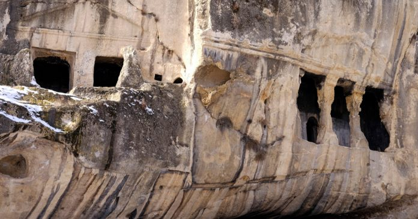
Burası neresi? Kent merkezine çok yakın bir konumda, 7-8 metre yükseklikte bulunan kayalar içine oyulmuş bir şekildeki Evkaya Mezarları, Kastamonu’daki ilginç tarihi eserler arasında yer almaktadır. Mezarlıklar üçgen alınlıklı ve beşgen çatı şeklinde oyulmuştur. Alanda toplamda 8 mezar bulunmaktadır ve bunlardan üçü anıtsaldır. Mezarlık alanının MÖ 7. yüzyılda anıtsal bir tapınma alanı olarak Paflagonyalılar tarafından yapıldığı düşünülmektedir. Mezarlık alanındaki, tanrılara içecek sunmak için oyulmuş olan “livasyon çukurları” da oldukça ilgi çekicidir.
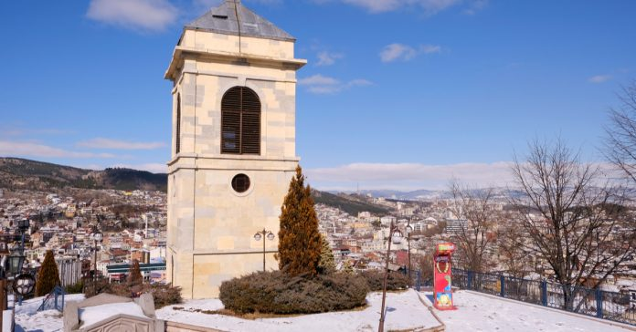
Burası neresi? Dönemin padişahı II. Abdülhamit tarafından İstanbul‘dan Kastamonu’ya sürgüne gönderilen saat, Kastamonu’nun en çok ziyaret edilen noktalarından biridir. Saatin sürgüne gönderilmesinin sebebi ise padişahın cariyelerinden birinin, çan sesi nedeniyle çocuğunun düşmesine sebep olmasıdır. Benzerlerine Kocaeli ve İzmir‘de rastladığımız saat kulelerinden biri de Kastamonu’da Sarayüstü Tepesi’nde bulunuyor. Osmanlı döneminde Kastamonu valisi Abdurrahman Nureddin Paşa tarafından 1885 yılında yaptırılmış. Tarihi saat kulesi 12 metre yükseklikte ve benzerleri gibi kare bir yapıya sahip. Bekçiler tarafından kontrolü sağlanan saatin her gün kurulması gerekmektedir.
Neden gitmeliyim? Saatin yanında yer alan kafeterya, ziyaretçilerin en çok tercih ettiği dinlenme alanlarından biri. Özellikle geceleri saat, ışıklandırma ile çok daha göz alıcı bir görünüme kavuşuyor. Kastamonu Kalesi’nin karşısında bütün heybetiyle arz-ı endam ettiği Saat Kulesi’ni mutlaka görmelisiniz.

Burası neresi? Kerempe Feneri de Osmanlı döneminde yapılmış bir eser; ancak, Fransızların yaptığı deniz fenerinde Osmanlı mimarisini görmek pek mümkün değil. 82 metre yükseklikteki deniz feneri, kare mimarisiyle dikkat çekiyor. Fener 1885 senesinde, Karadeniz’de faaliyet gösteren gemilere yardımcı olmak amacıyla inşa edilmiştir. 1934 yılında ise Almanlar, gemileri bilgilendirmek amacıyla fenere ses sireni eklemişler.
Neden gitmeliyim? İlginç bir tarihi olan fener, aynı zamanda Karadeniz’de Kurtuluş Savaşı’nın da sembolü olarak kabul ediliyor. Bu nedenle fener Nazım Hikmet’in Kurtuluş Savaşı Destanı adlı şiirinde de kendisine yer bulmuş. Fenerle ilgilenenler ise babadan oğula görevi devralmış aile bireyleridir. Çok fazla zaman geçirilecek bir nokta olmasa da tarihi değeri nedeniyle yolunuz düşerse görmenizi tavsiye ediyoruz.
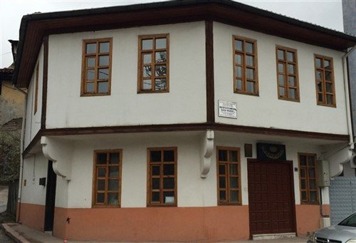
Burası neresi? Kastamonu merkezde yer alan Bediüzzaman Said Nursi’nin Evi, hayatı hapis ve sürgün ile geçen Nursi’nin 7 yıl boyunca ikamet ettiği evdir. Yaşadığı dönemin en önemli İslam alimi olarak bilinen ve Risale-i Nur adlı tefsir külliyatının yazarı olan Nur Cemaati’nin lideri Nursi, Kastamonu’da bir süre karakolda kaldıktan sonra hemen karşısındaki bu eve yerleştirilmiş ve burada ikamet etmeye başlamıştır. Bu sebepten evin ziyaretçileri oldukça fazladır.
Evin restorasyonu 1996 senesinde Hizmet Vakfı tarafından gerçekleştirilmiştir. Orijinal ev yıkılarak yerine aslına uygun bir şekilde yenisi inşa edilmiştir. Ev, 2017 senesinden bu yana “kültür evi” olarak ziyaretçilerini ağırlamaktadır.
Neden gitmeliyim? Ev içinde Bediüzzaman’a ait kişisel eşyalar ve elle çoğaltılmış çeşitli eserlerini görebiliyor ve bu önemli din alimini daha yakından tanıma fırsatına sahip olabiliyorsunuz.
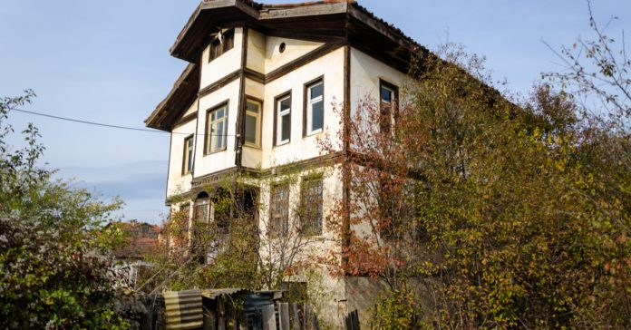
Burası neresi? İnebolu, adını Kurtuluş Savaşı’nın stratejik bakımdan en önemli ilçeleri arasına yazdırmış, Kastamonu’nun en güzel yerleşim yerlerinden biri. Savaş yıllarındaki konumu ise Ankara’ya gitmek isteyen pek çok yurttaşın öncelikle İnebolu iskelesine gelmesi ve buradan yola devam etmesiydi. İstanbul‘a Sovyetler Birliği’nden gelen savaş ekipmanlarının da geçişi İnebolu iskelesinden sağlanmıştır.
Eskişehir ve Beypazarı‘nın klasik evleri gibi Kastamonu’nun İnebolu ilçesi de kendisine has bir mimariye sahip. Aşı köyünün toprağından üretilen aşı boyası evlerin dış cephesinde kullanılıyor ve canlı bir renge sahip bu boya, evleri dış etkenlerden korumada oldukça başarılı. Çatıda kullanılan marla taşı ise, evlerin ısı yalıtımını sağlıyor. Yamaçlarda bulunan evler kot farkından dolayı, farklı açılardan farklı yüksekliklerdeymiş gibi görünüyor. İnebolu evlerinin içerisinde ise, geleneksel bir yapı ve haremlik selamlığa göre düzenlenmiş bir mimari hakim.
Neden gitmeliyim? Diğer yandan ulu önder Mustafa Kemal Atatürk, Şapka ve Kıyafet İnkılabını da İnebolu’da yapmıştır. Kastamonu’nun sahil şeridinde yer alan ilçe, koruma altına alınmış ahşap evleri, hareketli çarşısı, yemyeşil doğası ve tertemiz deniziyle Kastamonu’da mutlaka görmesi gereken tarihi yerler arasında bulunuyor.
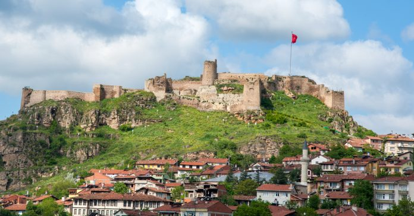
Burası neresi? Kastamonu Kalesi’nin MS 12. yüzyılda Komnenoslar tarafından yapıldığı düşünülmektedir ve kalenin o dönem yoğunlaşan Türk akınlarından korunmak amacıyla yapıldığı tahmin edilmektedir. 18. yüzyıla kadar büyük oranda yok olan kalenin günümüze sadece iç kale bölümü ulaşabilmiştir. Kale içinde tüneller, su sarnıçları, zindan ve “Bayraklı Sultan” ismi verilen bir türbe yer almaktadır.
Neden gitmeliyim? Muhteşem şehir manzarası ve tarihi dokusuyla Kastamonu’yu gezenlerin uğrak yerlerinden biri olan kale, akşam saatlerindeki muhteşem aydınlatmasıyla daha bir güzel olmaktadır. Kastamonu Kalesi şehrin en yüksek noktasında bulunmaktadır ve Kastamonu’yu bu kaleden seyretmek içinize huzur dolduracak.
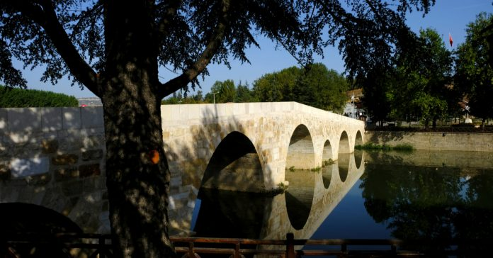
Burası neresi? Kastamonu’nun tescilli yöresel lezzeti sarımsağı ile ünlü Taşköprü, adını hemen ilçe girişinde yer alan Gökırmak üzerindeki taş köprüden almaktadır. Roma Dönemi’nden günümüze kadar geldiği düşünülen Taşköprü 68 metre uzunluğunda, 5,10 metre genişliğinde ve 7 gözlü tarihi bir yapıdır. Köprü, 1366 senesinden bu yana aktif olarak kullanılmaktadır.
Kaçırmayın! Diğer yandan ilçeye gelmişken mutlaka görmeniz gereken yerler arasında; Pompeiopolis Antik Kenti, Direkli Kaya Mezarı, Kalekapı Kaya Mezarı, Kızlar Kalesi, Abdal Hasan Türbesi ve Seymenli Mesire Yeri gelmektedir. Çoğu Roma döneminden kalmış bu tarihi yapılar, Taşköprü’nün tarihi zenginliklerini oluşturmaktadır.

Burası neresi? 1443 yılı ile inşasına başlanan Kurşunlu Han, Candaroğulları Beyliği’nin son hükümdarı Kemalettin İsmail Bey tarafından yaptırılmış muazzam bir tarihi yapıdır. Kastamonu Aktarlar Çarşısında yer alan han, güney ve kuzeyde olmak üzere iki kapıya sahiptir. Günümüzde otele çevrilen bu tarihi han içerisinde bir kahve molası vermenizi tavsiye ederiz.
Neden gitmeliyim? Kurşunlu Han hem tarihe meydan okuması hem de dileyenler için “Kastamonu’da nerede kalınır?” sorusu için tercih edilebilecek yerlerden biri olması nedeniyle Kastamonu’daki tarihi yerler arasında bulunmaktadır.
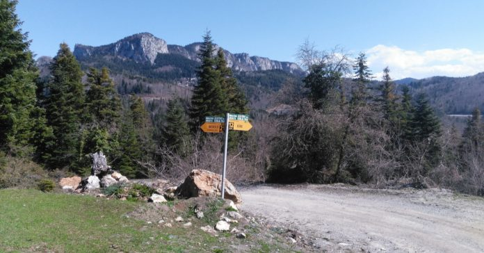
Burası neresi? Kastamonu tarihi yerler listemizin son maddesinde İstiklal Yolu yer alıyor. Kastamonu Valiliği tarafından hazırlanan İstiklal Yolu projesi, 2008 yılında en uzun üçüncü trekking parkurunun kurulmasına vesile olmuştur. Milli Mücadele yıllarının kahramanı olarak gösterilen İnebolu Ankara arası ulaşımı temsilen oluşturulan parkur, 95 kilometrelik doğa ile iç içe bir alanı kapsamaktadır.
İstiklal Yolu’nun tarihi açıdan önemi ise Kurtuluş mücadelesi boyunca gemilerle İnebolu’ya getirilmiş olan cephaneler buradan cephelere taşınmıştır. Kullanılan bu yolların uzunluğu ise 344 kilometreyi bulmaktadır. Yol, 2018 senesinden itibaren “Milli Park” olarak ilan edilmiştir.
Neden gitmeliyim? Parkurda bağımsız trekking toplulukları yürüyüş yapabiliyorken, çeşitli kamp etkinlikleri de düzenlenmektedir. Her yıl Kastamonu Valiliği’nin desteklediği İstiklal Yolu yürüyüşlerine de ev sahipliği yapmaktadır.
 Kastamonu tarihi yerler listemize ek tarihi yerleri aşağıda yer alan yorumlar kısmından ileterek, yazımızı geliştirmemizde bizlere yardımcı olabilirsiniz.
Kastamonu tarihi yerler listemize ek tarihi yerleri aşağıda yer alan yorumlar kısmından ileterek, yazımızı geliştirmemizde bizlere yardımcı olabilirsiniz.